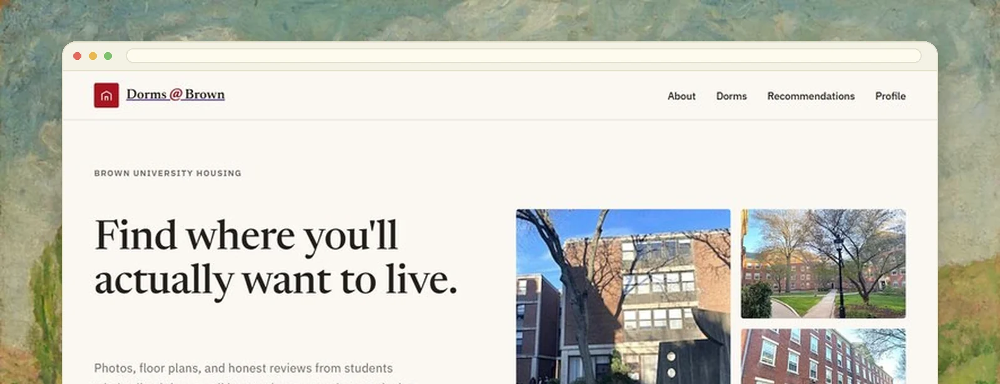
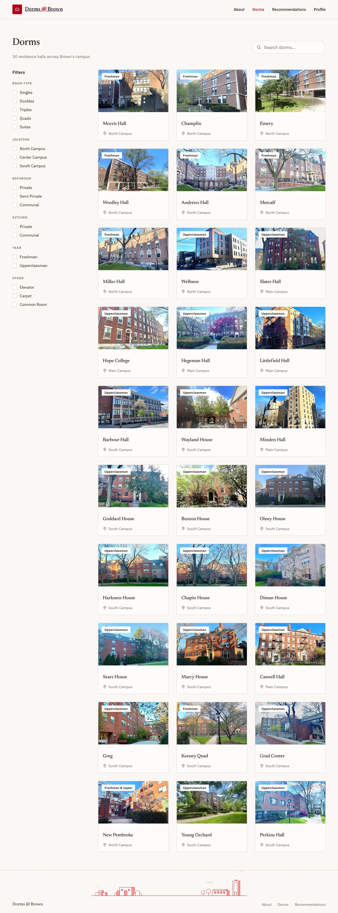
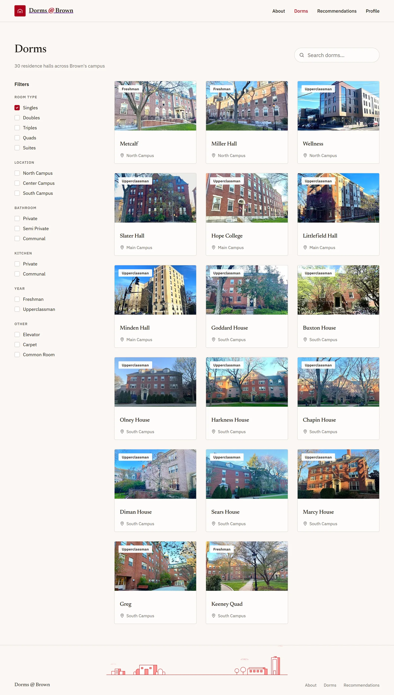
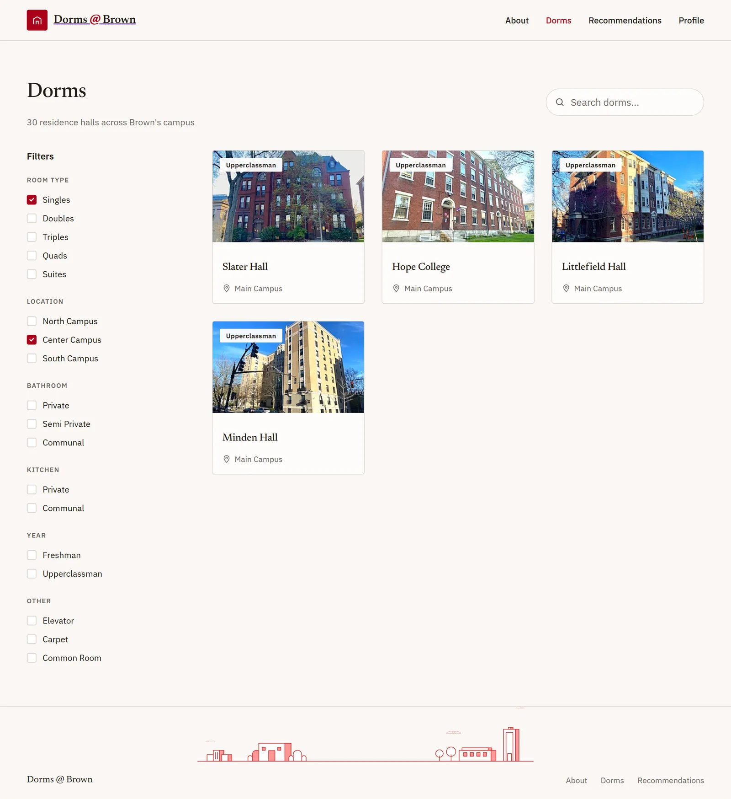
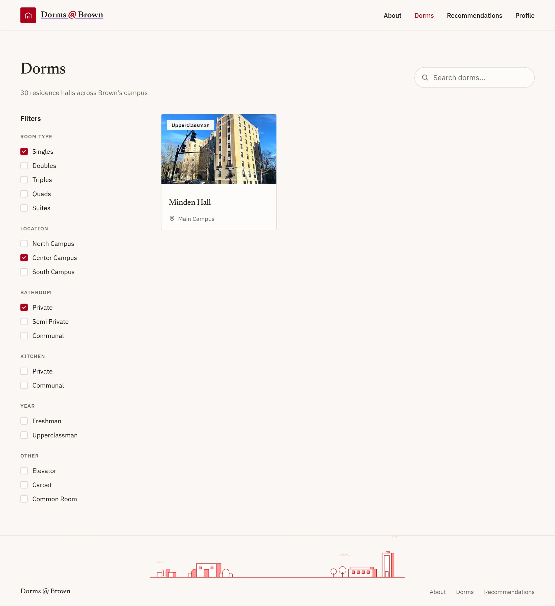
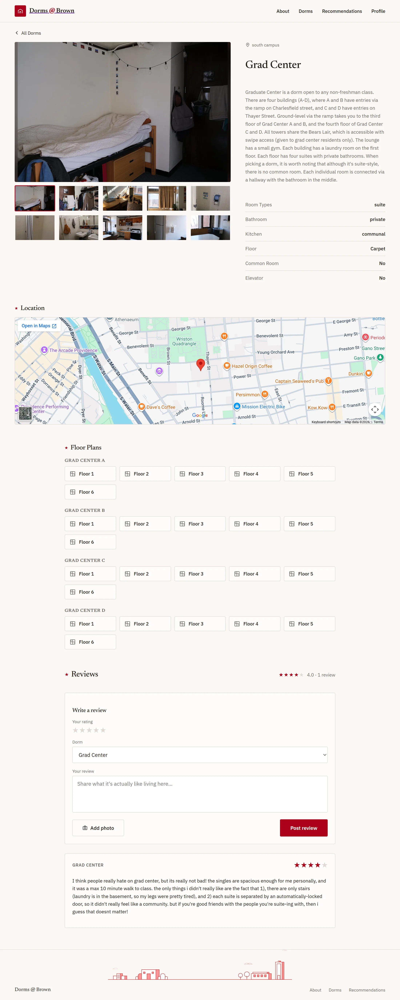
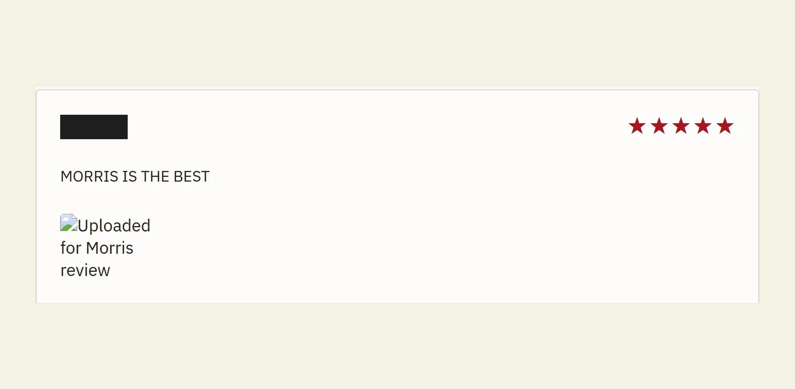
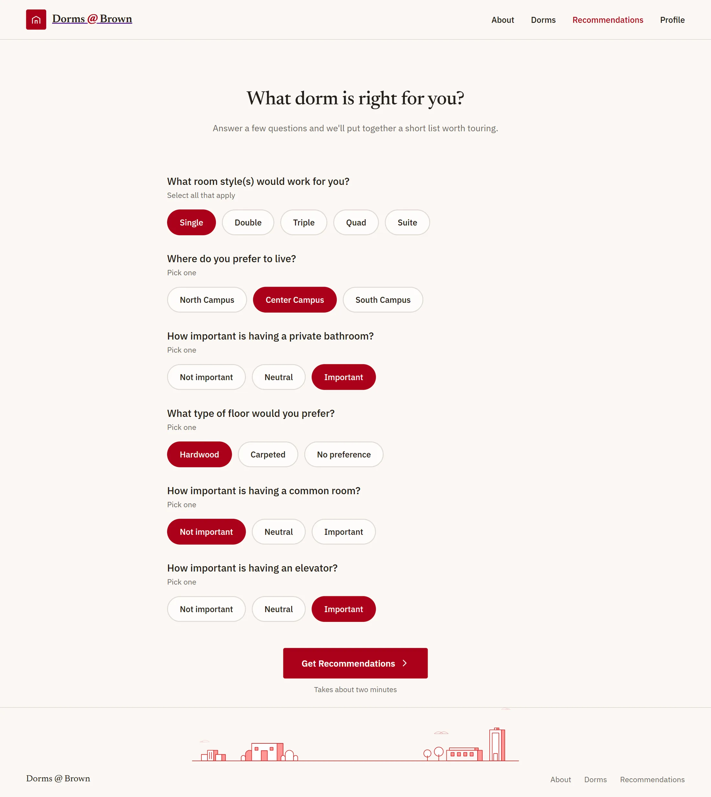
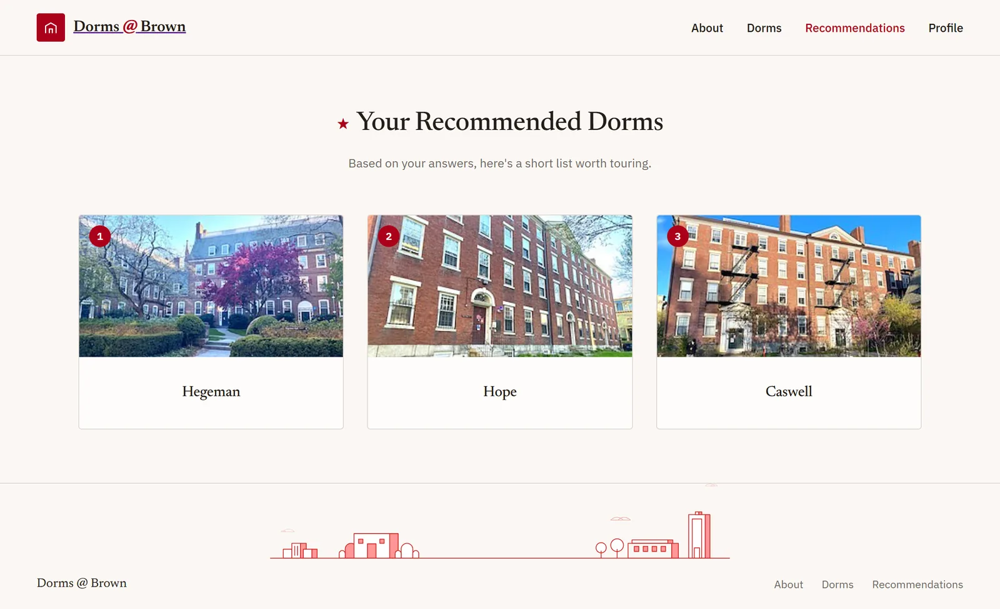
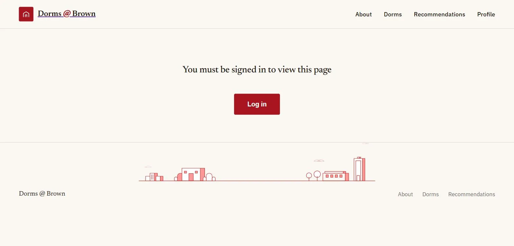

Personal
Dorms @ Brown
Before the annual housing lottery, students piece dorm information together from old forum posts, secondhand accounts and a housing page with floor plans but no photos. D@B puts it in one place: photos, plans, features and peer reviews, plus a quiz that narrows thirty dorms to a shortlist worth touring.
Everyone was guessing, including Res Life
The information existed. It was just scattered across a university housing page, a few years of forum posts, and whoever you happened to know who had lived somewhere. There was no single place to see what a room actually looks like or hear what the people in it thought.
The cost landed on students as a bad decision they lived with for a year, and on Residential Life as a steady stream of one-off questions that better upfront information would have answered.
Everything in one place, then a shortlist
Thirty dorms, filterable down to the few worth walking to. The filters are the ones people actually argue about in March: room type, location on campus, whether the bathroom is shared and how, kitchen access, class year, amenities, with live search by name over the top of all of it.
A dorm's own page then has to answer the question the filters cannot, which is what the place is like. Photo gallery, floor plans, room features, an embedded campus map, an average rating, and reviews from people who lived there.




A dorm page, top to bottom
The page answers the questions in the order you would ask them. A photograph of the actual room first, because that is what nobody could find anywhere else. Then the description and the six features the filters run on. Then where it is on campus, then the plan of the floor you might live on, then what somebody who lived there said.
Two of those parts took a decision rather than a layout. Dorm photos are phone snapshots in every orientation and resolution, and hard-cropping a tall one into a fixed frame cuts off the half of the room you wanted. The gallery letterboxes the whole photo over a blurred, darkened copy of itself: nothing is cropped, the frame keeps its size, and the fill reads as intentional rather than as empty space.
The other is the plans. Keeney, Greg, Grad Center, New Pembroke and Young Orchard are not buildings, they are several, each with its own floors and its own set of plans, so the plans render as grouped card grids, one group per building. That only exists because the data was looked at rather than assumed, and it is invisible on the other twenty-five dorms, which is the correct outcome.


Thirty dorms in, three out
The filters assume you already know what you want. Plenty of people do not. They know they would like to cook sometimes, that a private bathroom matters more to them than being on Center Campus, and that they would rather not spend a year alone on a Tuesday night, which is not a filter query.
So the quiz asks about those instead: room styles that would work, where you would rather live, how much the bathroom matters, and a few more. What comes back is not a filtered list with everything else hidden, it is a ranked shortlist of three, which is a number of buildings you can actually go and walk through before the lottery.


Why there is a backend at all
The frontend never talks to the database. Every read and write goes through a Java server, which is the only thing holding admin credentials; the client holds a public config good for sign-in and photo upload and nothing else.
That split is what forced the deployment shape. GitHub Pages serves static files only, so the server needed a real host and runs as a container elsewhere, with the service-account key passed in as an environment variable rather than a file, because most container platforms have no friendly way to drop in a raw secret.

The whole gate, and the reason a review here is worth more than one anywhere else.
The deployment is part of the design
I had thought of hosting as something that happens after the build. It is not: the static-host constraint decided the architecture, the auth flow and the routing, and every one of those is visible to the person using it.
Client-side routing on a project path needed an explicit basename and the redirect trick for deep links, because there is no server to rewrite a URL. That is a design decision that arrived from the infrastructure, and I would now go looking for those earlier.